![IM]()
Prontuario Mecatrónica
UNAM · FI · DIMEI · Plan 2016
Objetivo(s) del curso:
El alumno analizará las propiedades de los sistemas numéricos y las utilizará en la resolución de problemas de polinomios, sistemas de ecuaciones lineales y matrices y determinantes, para que de manera conjunta estos conceptos le permitan iniciar el estudio de la física y la matemática aplicada.
Razón: Es una comparación de dos magnitudes a través de un cociente.
Razones trigonométricas: Son las razones que existen entre los lados de un triángulo rectángulo y cambian al variar el ángulo en cuestión; es decir, están en función del ángulo.
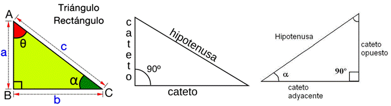
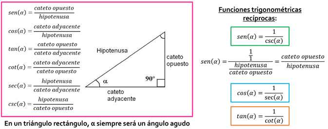


Primer cuadrante: TODAS las funciones trigonométricas son positivas
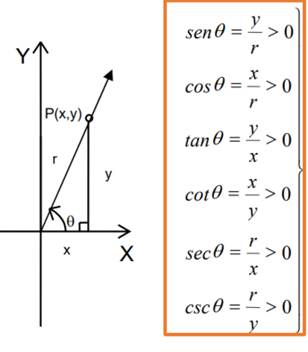
Segundo cuadrante: Sólo las funciones SENO y COSECANTE son positivas
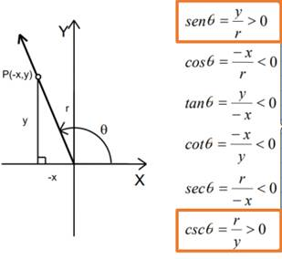
Tercer cuadrante: Sólo las funciones TANGENTE y COTANGENTE son positivas
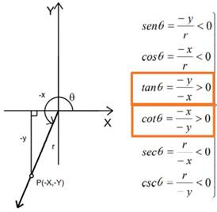
Cuarto cuadrante: Sólo las funciones COSENO y SECANTE son positivas

Círculo trigonométrico: Es una circunferencia de radio uno, normalmente con su centro en el origen, que se utiliza con el fin de poder estudiar fácilmente las razones trigonométricas y funciones trigonométricas, mediante la representación de triángulos rectángulos auxiliares.

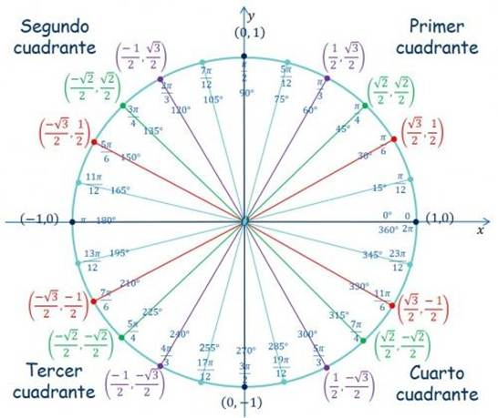
Gráficas de las funciones trigonometricas; Las funcionestrigonométricas son funciones periódicas

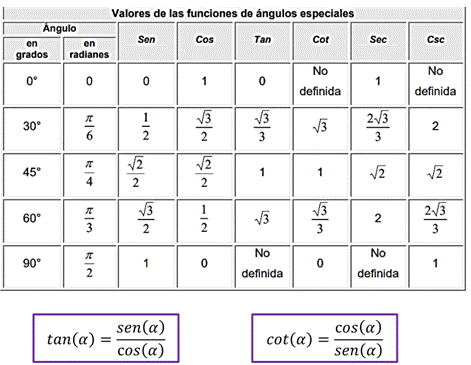

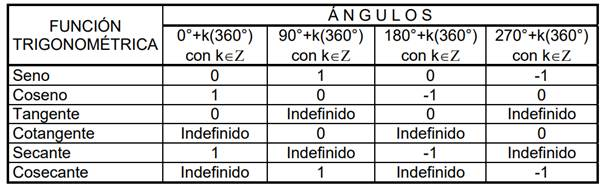

Identidad trigonométrica: Es una proposición de igualdad en la cual intervienen funciones trigonométricas y que se cumple para todo valor del argumento
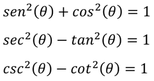


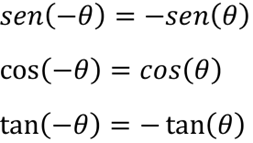
“En todo triángulo rectángulo el cuadrado de la hipotenusa es igual a la suma de lo cuadrados de los catetos”

La suma de los ángulos internos de cualquier triángulo siempre es igual a 180
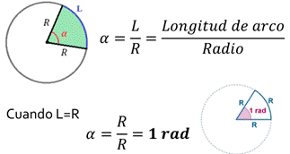

Triángulos Oblicuángulos: Son aquellos que no tienen ningún ángulo recto (90°)

Necesitamos conocer mínimo:
Ø 2 lados y el ángulo opuesto a cualquiera de ellos.
Ø 2 ángulos y el lado opuesto a cualquiera de ellos.

Necesitamos conocer mínimo:
Ø Los 3 lados
Ø 2 lados y el ángulo comprendido entre ellos.
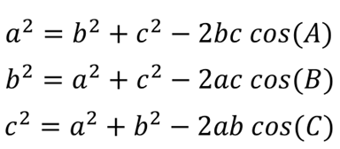
Ecuación trigonométrica: Es una igualdad en la que la incógnita está afectada por una función trigonométrica. Como estas funciones son periódicas, habrá por lo general infinitas soluciones.
Pasos a seguir para resolver ecuaciones trigonométricas:
1. Expresar todos los términos de la ecuación con el mismo argumento (ángulo)
2. Aplicar identidades trigonométricas
3. Desarrollar y reducir las expresiones trigonométricas
4. Llegar a una sola expresión trigonométrica igualada a un número
5. Aplicar la función trigonométrica inversa para obtener el valor de la incógnita
Número: Es un concepto matemático que expresa cantidad. Constituyen un patrón o referencia para establecer la comparación entre cantidades.
Numeral: Son los símbolos que se emplean para representar números
Conjuntos numéricos: Son las categorías en las que se clasifican los números, en función de sus diferentes características (propiedades).
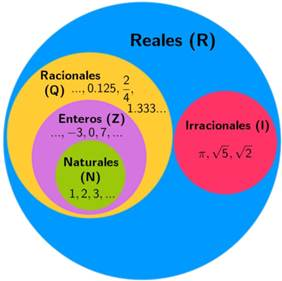
Sistema algebraico: Es un conjunto provisto de una o varias operaciones (binarias)
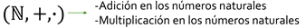
Números naturales: Es el conjunto de aquellos números que ocupamos para contar elementos, y se representa a partir del siguiente símbolo: ℕ
Conjunto: es una agrupación de elementos los cuales tienen una o más características en común.

Notación:
Ø Los conjuntos se denotan con letras mayúsculas.
Ø Todos los elementos deben estar separados por comas.
Ø El total de elementos debe estar encerrado entre llaves { }.
Ø Conjuntos por extensión: se escriben todos los elementos del conjunto.

Ø Conjuntos por comprensión: se especifican las características que cumplen los elementos del conjunto.

Cardinalidad: es el número de elementos que pertenecen a un conjunto.
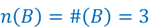
Conjunto finito: se conoce el total de los elementos y se pueden enumerar (contar).
Conjunto infinito: no se conoce el total de los elementos (puede ser numerable o no numerable).

Conjunto vacío: es aquel conjunto que carece de elementos.

Conjunto universal: es el conjunto que contiene todos los elementos con los cuales se trabaja para una situación específica.
Subconjuntos de un conjunto: conjunto de elementos que tienen las mismas características y que está incluido dentro de otro conjunto más amplio.
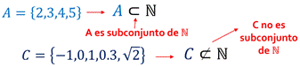
Unión: consiste en reunir en un solo conjunto todos los elementos de los conjuntos que se unen.

Intersección: consiste en reunir en un solo conjunto todos los elementos comunes de los conjuntos que se están analizando.

Diferencia: consiste en reunir en un solo conjunto todos los elementos contenidos en el conjunto de referencia que no se encuentran en el conjunto de operación.

Complemento: es el conjunto de todos los elementos que no están en el conjunto de referencia y que le faltan para ser igual al conjunto universal.

Postulados de Peano
El conjunto ℕ de los números naturales es tal que:
Ø 1 𝜖 ℕ
Ø Para cada n ∈ ℕ se tiene que n∗∈ ℕ llamado el siguiente de n
Ø Para cada n ∈ ℕ se tiene que n∗ ≠ 1
Ø Si m, n 𝜖 ℕ y m∗ = n∗ entonces m = n
Ø Todo subconjunto S de ℕ que tenga las propiedades:
o a) 1 ∈ 𝑆
o b) 𝑘 ∈ 𝑆 implica que 𝑘∗ ∈ 𝑆 llamado
Es el mismo conjunto ℕ
Adición en los números naturales
Definición:
Ø n + 1 = n∗ para todo n 𝜖 ℕ
Ø n + m∗ = (n + m) ∗ siempre que n + m
esté definido
Multiplicación en los números naturales
Definición:
Ø n ∙ 1 = n∗ para todo n 𝜖 ℕ
Ø n ∙ m∗ = (n ∙ m) + n
Propiedades de la adición y la multiplicación
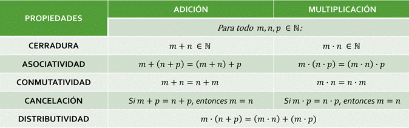
Dados dos naturales n y m, decimos que n es menor que m, lo que representamos mediante n < m, si: ∃ 𝑥 ∈ ℕ tal que n + 𝑥 = m
Dados dos naturales m y n, decimos que m es mayor que n, lo que representamos mediante m > n, si: n < m
Ley de tricotomía: Si m y n son números naturales cualesquiera, entonces se verifica una y sólo una de las siguientes proposiciones:
Ø n < m
Ø n = m
Ø m < n
Teoremas:
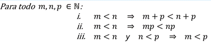
Inducción matemática: es un razonamiento utilizado en la demostración de proposiciones que dependen de un parámetro que sólo admite valores naturales.
Pasos:
1. Demostrar que la proposición es válida para el primer valor admisible (n=1).
2. Suponer que la proposición es válida para el caso general, es decir, para el valor n=k (hipótesis de inducción).
3. Demostrar a partir de la hipótesis que la proposición es válida para el siguiente valor de k, es decir, k+1 (tesis de inducción).
Números enteros: Es el conjunto de aquellos números que se obtienen mediante la diferencia de dos números naturales: ℤ = {𝑥|𝑥 = m − n; m, n ∈ ℕ}, ℕ ⊂ ℤ

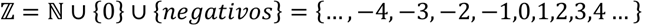
Adición en los números enteros
Sea a = m - n, b = p - q dos números enteros, con m, n, p, q ∈ N. El número a + b se define como:
a + b = (m + p) - (n + q)
Sustracción en los números enteros
Sea a, b ∈ Z, el número a - b se define como:
a – b = a + (-b)
Multiplicación en los números enteros
Sea a = m - n, b = p - q dos números enteros, con m, n, p, q ∈ N. El número a ∙ b se define como:
a ∙ b = (m · p + n ∙ q) - (n ∙ p + m ∙ q)
Propiedades adicionales de la multiplicación

Propiedades de la adición y la multiplicación


Números racionales: Es el conjunto de aquellos números que se obtienen mediante el cociente de dos números enteros (fracciones finitas o infinitas): ℚ = {𝑥|𝑥 = a/b; a, b ∈ ℤ }, ℕ ⊂ ℤ ⊂ ℚ

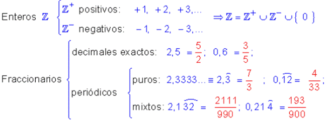
Adición en los números racionales
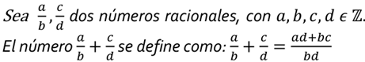
Sustracción en los números racionales

Multiplicación en los números racionales

División en los números racionales

Teorema de la densidad de los racionales
Para todo 𝑥, y 𝜖 ℚ, con 𝑥 < y existe un número racional entre 𝑥 y y tal que: 𝑥 < (𝑥+y) / 2 < 𝑥
Propiedades de la adición y la multiplicación
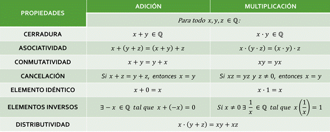
Números irracionales: Es el conjunto de aquellos números que no se pueden expresar como el cociente o razón de dos números enteros. Son números decimales que poseen infinitas cifras decimales no periódicas): ℚ′ = {…, ln 2, 𝜑, e, 𝜋, …} = ℝ − ℚ
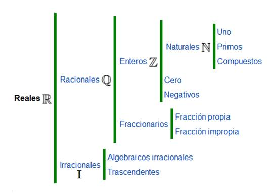
Números reales: es el conjunto que contiene tanto a los números racionales como a los irracionales:
ℝ = ℚ ∪ Ι = ℚ ∪ ℚ′

División en los números reales

Sustracción en los números reales

Signo de los números reales

Propiedades adicionales de la multiplicación
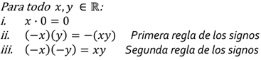
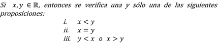

Propiedades de la adición y la multiplicación
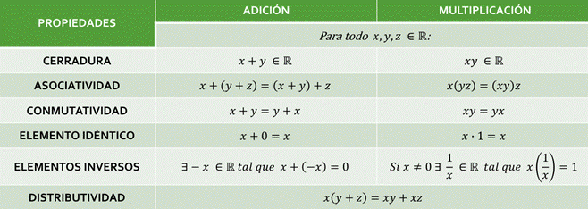

Desigualdad: es una expresión que indica que una cantidad es mayor o menor que otra.
Inecuación: es una desigualdad en la que hay una o más cantidades desconocidas (incógnitas) y que sólo de verifica para determinados valores de las incógnitas.
Valor absoluto
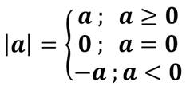


Números complejos: es el conjunto que contiene tanto a los números reales como a los números imaginario:
ℂ = ℝ ∪ Im = { z |z = a + i b; a, b ∈ ℝ; i2 = -1 }, ℝ = ℚ ∪ ℚ´
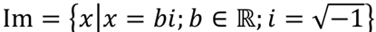


Unidad imaginaria
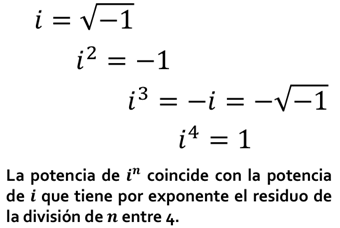
Diagrama de Argand o Plano complejo
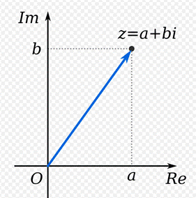
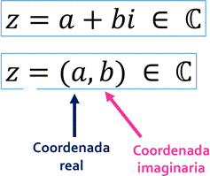
Conjugado de un número: Sea z = 𝑎 + b𝑖 un número complejo. El conjugado de z, que representamos con
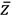
, se define como: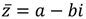
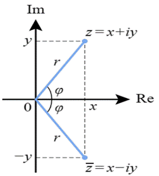
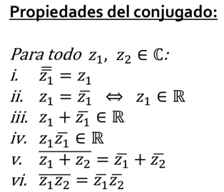
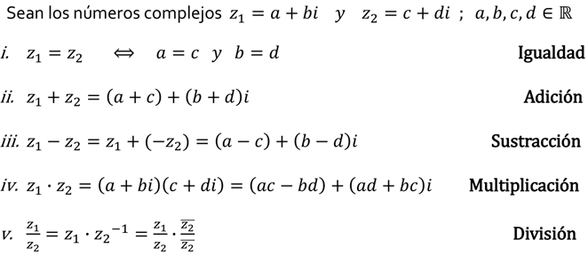
Propiedades de la adición y la multiplicación
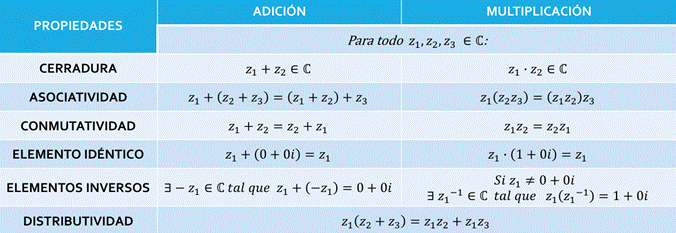

Diagrama de Argand o Plano complejo
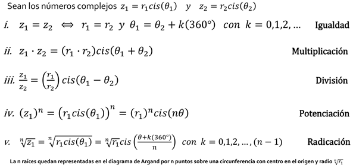
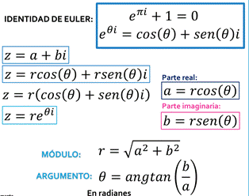
Diagrama de Argand o Plano complejo
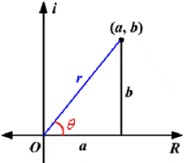

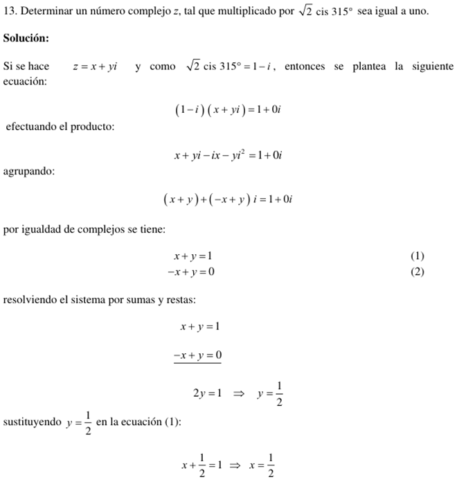


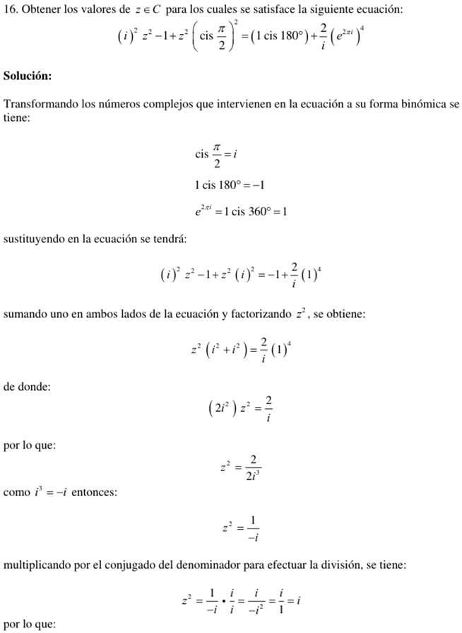


Término o monomio

Términos semejantes: son aquellos términos o monomios cuya parte literal es la misma y sólo cambian sus coeficientes.

Binomio: es la suma algebraica de 2 términos o monomios.
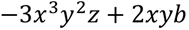
Trinomio: es la suma algebraica de 3 términos o monomios.
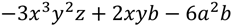
Polinomio: Es una expresión algebraica que constituye la suma o la resta de un número finito de términos o monomios, que presenta la siguiente forma.

Donde los coeficientes son:
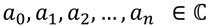
Y los términos del polinomio son:
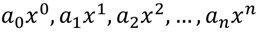
Una forma simplificada de expresar un polinomio es utilizando el operador sumatoria o suma abreviada.

Grado de un polinomio: Corresponde al mayor exponente presente en los términos del polinomio.


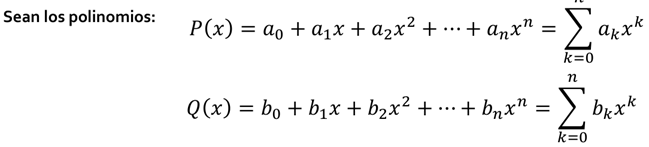
Igualdad de polinomios

Adición de polinomios
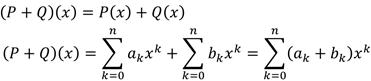
Sustracción de polinomios
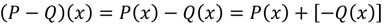
Multiplicación de polinomios
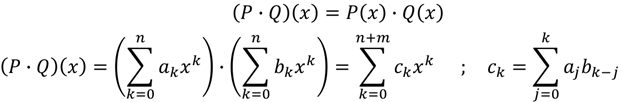
Propiedades de la adición y la multiplicación


Conceptos equivalentes


Sistema de ecuaciones lineales: es un conjunto de al menos 2 ecuaciones lineales que contienen las mismas variables y que comparten la misma solución.
Un sistema de m ecuaciones lineales con n incógnitas sobre C es una expresión de la forma:
Un sistema
de ecuaciones lineales es homogéneo cuando
todos sus términos independientes son iguales a cero, es decir: 
Cuando dos sistemas de ecuaciones lineales tienen las mismas soluciones se dice que son equivalentes.
Uno de los métodos que se emplean para obtener las soluciones de un sistema de ecuaciones lineales se basa en el empleo de ciertas transformaciones, llamadas transformaciones elementales, que no alteran las soluciones del sistema; es decir, transformaciones que al aplicarse a un sistema dan como resultado un sistema equivalente.
Las transformaciones elementales pueden ser de tres tipos y consisten en:
i. Intercambiar dos ecuaciones
ii. Multiplicar una ecuación por un número diferente de cero
iii. Multiplicar una ecuación por un número y sumarla a otra ecuación, reemplazando esta última por el resultado obtenido
El procedimiento más cómodo para obtener las soluciones de un sistema de ecuaciones lineales es, tal vez, el conocido como método de Gauss.
Este método consiste en la eliminación consecutiva de las incógnitas con el propósito de llegar a un sistema que tenga forma escalonada.
Para llevar a cabo dicha eliminación sin alterar las soluciones del sistema, se recurre a las transformaciones elementales que hemos descrito.


Matriz: Es un conjunto de elementos (números, objetos, operadores, etc.) dispuestos en un arreglo bidimensional, de renglones y columnas, encerrados entre paréntesis o corchetes, que obedecen ciertas reglas algebraicas
Vector (matriz) renglón o vector (matriz) columna: Es una matriz formada por un solo renglón o una sola columna, respectivamente.

Matriz nula: Es una matriz donde todos sus elementos son ceros.
Matriz rectangular: Es aquella matriz cuyo número de renglones es diferente al número de columnas, es decir: 𝒎 ≠ 𝒎
Matriz cuadrada: Es aquella matriz cuyo número de renglones es igual al número de columnas: 𝒎 = n
Sean dos matrices:
 Igualdad de matrices:
Dos matrices son iguales si son del mismo orden y si los elementos de la misma
posición son iguales en ambas, es decir:
Igualdad de matrices:
Dos matrices son iguales si son del mismo orden y si los elementos de la misma
posición son iguales en ambas, es decir:
Suma de matrices: Esta operación únicamente se puede realizar entre matrices del mismo orden. Para realizarla se suman elemento por elemento en sus posiciones correspondientes:
Diferencia de matrices: Esta operación únicamente se puede realizar entre matrices del mismo orden. Para realizarla se cambia el signo de cada uno de los elementos de la segunda matriz y posteriormente se realiza la suma de elemento por elemento en sus posiciones correspondientes.

Propiedades de la adición


 Multiplicación de
matrices por un escalar: Esta operación se realiza multiplicando
el escalar por cada uno de los elementos de la matriz, es decir:
Multiplicación de
matrices por un escalar: Esta operación se realiza multiplicando
el escalar por cada uno de los elementos de la matriz, es decir:
Propiedades por un escalar


Producto de matrices: Esta operación únicamente se puede realizar entre matrices donde el número de columnas de la primera matriz es igual al número de renglones de la segunda:

El elemento que se encuentra en la posición correspondiente al renglón i y la columna j de la matriz producto AB, se obtiene sumando los productos de los elementos del renglón i de la matriz A por sus elementos correspondientes en la columna j de la matriz B:
Matriz identidad: es una matriz cuadrada de orden n tal que todos los elementos de su diagonal principal son uno y los elementos fuera de ella son cero. Ejemplos

Matriz inversa: la matriz cuadrada de orden n 𝐴 tiene una matriz inversa 𝐴−1 la cual cumple que:

Una de las condiciones necesarias para que una matriz tenga inversa es que debe ser una matriz cuadrada. Además, la inversa deberá ser también cuadrada y del mismo orden que A
Matriz no singular: es aquella matriz 𝐴 que SÍ tiene una matriz inversa 𝐴−1
Matriz singular: es aquella matriz 𝐴 que NO tiene una matriz inversa 𝐴−1


Traza de una matriz cuadrada: es la suma de los elementos de su diagonal principal:


Matriz diagonal: es una matriz cuadrada en donde los elementos de su diagonal principal son diferentes de cero y los demás son ceros. Ejemplos:
Matriz triangular superior: es una matriz cuadrada en la cual todos los elementos por debajo de la diagonal principal son cero. Ejemplos:

Matriz triangular inferior: es una matriz cuadrada en la cual todos los elementos por arriba de la diagonal principal son cero. Ejemplos:
Matriz transpuesta: la matriz transpuesta de A es la matriz en donde los renglones de A ahora son las columnas de la transpuesta, es decir:

Matriz conjugada: Sea A una matriz de números complejos, su matriz conjugada es aquella matriz en donde se reemplaza cada elemento por su respectivo complejo conjugado: Ā
Matriz simétrica: es aquella matriz cuadrada que es igual a su propia matriz transpuesta: 𝐴 = 𝐴𝑇
Matriz antisimétrica: es aquella matriz cuadrada que es igual al negativo de su propia transpuesta: 𝐴 = −𝐴𝑇
Matriz ortogonal: es aquella matriz cuadrada cuya matriz transpuesta es igual a su inversa: 𝐴𝑇 = 𝐴−1
El determinante de una matriz ortogonal es igual a 1
Matriz unitaria: es aquella matriz cuadrada cuya matriz conjugada transpuesta es igual a su inversa: 𝐴∗ = 𝐴−1
El determinante de una matriz unitaria es igual a 1
Matriz hermitiana: es aquella matriz cuadrada de números complejos que es igual a su propia transpuesta conjugada: 𝐴 = (Ā)𝑇 = 𝐴∗
Matriz antihermitiana: es aquella matriz cuadrada de números complejos que es igual al negativo de su transpuesta conjugada: 𝐴 = −(Ā)𝑇 = -𝐴∗
Determinante: es un número asociado a una matriz cuadrada que se puede obtener a partir de diferentes métodos: det (𝐴) = [𝐴]
Matriz no singular: es aquella matriz 𝐴 que SÍ tiene una matriz inversa 𝐴−1 (det (𝐴) ≠ 0)
Matriz singular: es aquella matriz 𝐴 que NO tiene una matriz inversa 𝐴−1 (det (𝐴) = 0)
1) Si todos los elementos de una fila o columna de un determinante son nulos, el valor del determinante es nulo.
2) Si un determinante tiene dos filas o columnas proporcionales el determinante es cero.
3) Si todos los elementos de una fila o columna se multiplican por un escalar, el valor del determinante queda multiplicado por dicho escalar
el determinante se obtiene de restar la multiplicación de los elementos de la diagonal principal de la matriz y la multiplicación de los elementos de la diagonal secundaria de la misma matriz.
El inconveniente es que la regla de Sarrus únicamente se puede utilizar para determinantes de matrices de 2x2 y 3x3.
Menor: el menor o menor complementario de una matriz A es el determinante de alguna submatriz, obtenido de A mediante la eliminación de una o más de sus filas o columnas [𝑀𝑖𝑖].
Cofactor: el cofactor del elemento de la matriz [𝑎𝑖𝑖] se denota como [C𝑖𝑖] y está dado por:

Matriz inversa: la matriz cuadrada de orden n 𝐴 tiene una matriz inversa 𝐴−1 la cual cumple que:

Una de las condiciones necesarias para que una matriz tenga inversa es que debe ser una matriz cuadrada. Además, la inversa deberá ser también cuadrada y del mismo orden que A.
Matriz no singular: es aquella matriz 𝐴 que SÍ tiene una matriz inversa 𝐴−1
Matriz singular: es aquella matriz 𝐴 que NO tiene una matriz inversa 𝐴−1

Donde Adj(A) se le conoce como la matriz adjunta de A.
Matriz adjunta: la matriz adjunta Adj(A) de la matriz cuadrada de orden n 𝐴 es la matriz de cofactores de su transpuesta.
Esto significa que para encontrar la matriz adjunta primero se transpone la matriz original y después, con base en ella, se calcula la matriz de cofactores.
Se dice que un sistema con n ecuaciones lineales y n incógnitas es de Cramer cuando el determinante de la matriz de los coeficientes es distinto a cero. Así todo sistema de Cramer es consistente determinado, es decir, tiene solución única.

Con la regla de Cramer se tienen los siguientes casos:

Arzamendi, P. Sergio Roberto. Cuaderno de ejercicios de álgebra.
León Cárdenas, Javier. Álgebra.
Lehmann, Charles H. Álgebra.
Solar G., Eduardo, y Speziale de G., Leda. Álgebra I.
Velázquez T., Juan. Fascículo de inducción matemática.